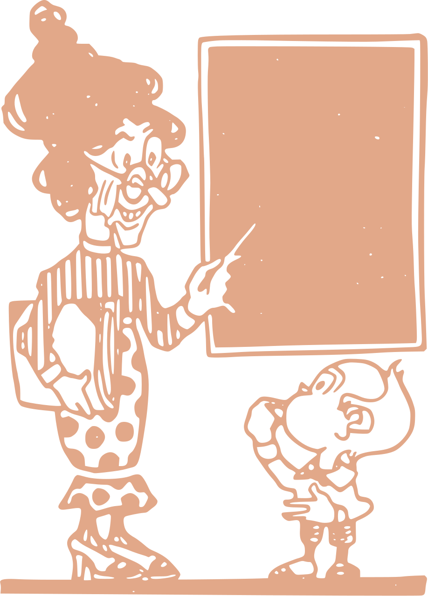
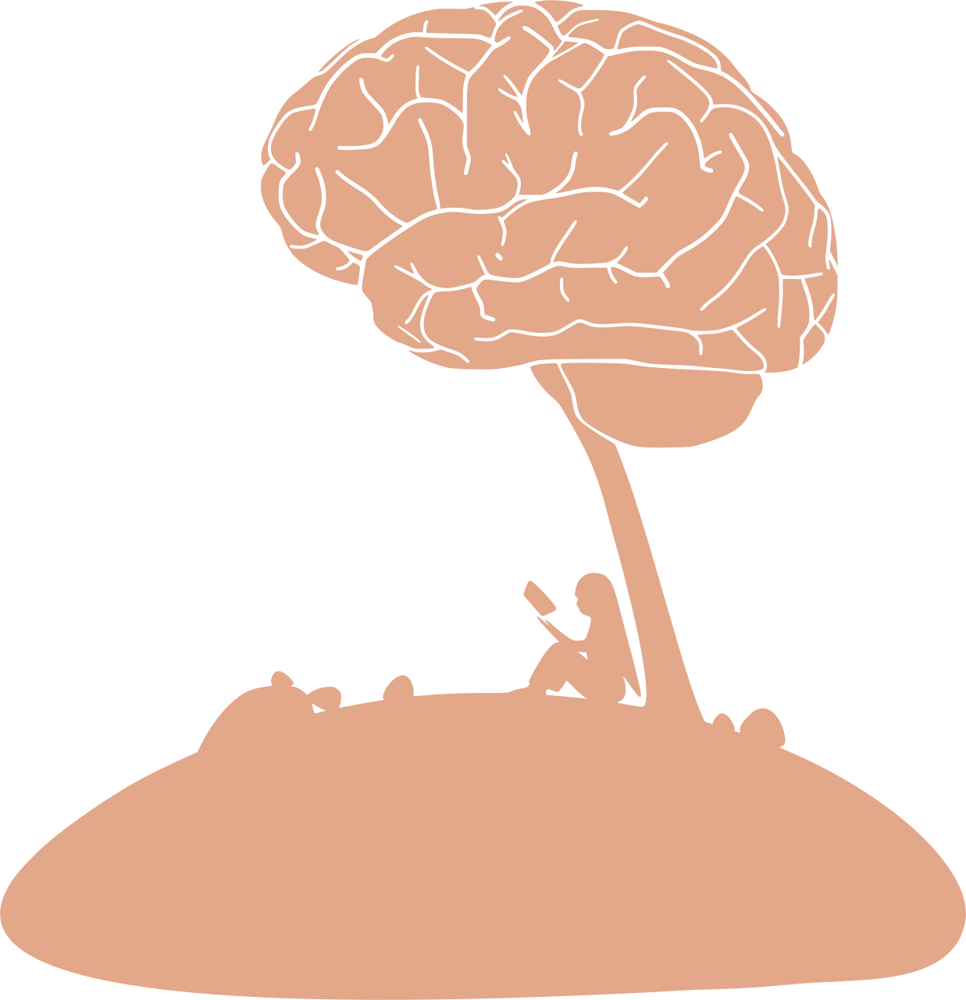

Spoznavanje IKT je v slovenskih šolah pomemben dejavnik, vključen je z učnim načrtom pri neobveznem izbirnem predmetu računalništvo za učence druge triade (MIZŠ, 2013) in z učnim načrtom pri obveznem izbirnem predmetu računalništvo za učence tretje triade (MIZŠ, 2002).
Uporaba IKT je pri otrocih pomembna že pri zgodnjem učenju, saj je povezano z razvijanjem računalniških veščin že od predšolskega obdobja do konca prve triade osnovne šole. Precej pomembno vlogo ima tudi učitelj, ne samo učenec, saj mora učence spodbujati in učiti tako, da bodo spretni pri uporabi računalnika kot orodje, za pridobivanje novih znanj, tudi s pomočjo medmrežja. Splet je vir številnih e-gradiv, ki jih učitelj vključuje v učno snov (Krapež, 2013). Glavni namen uvajanja IKT v izobraževanje je bolj učinkovito učenje in kakovost pridobljenega znanja.
Ker lahko v izobrževanju IKT uvaja le digitalno pismen učitelj, je zato potrebno, da se tudi v času študija študenti usposabljajo ter nagrajujejo znanje. Zato imajo učitelji prve triade še kako pomembno vlogo pri razvoju digitalnih veščin učencev.
Standard, ki vključuje uporabo IKT, se v učnih načrtih pojavi v tretji triadi, in sicer pri pouku matematike.
Učenci drugega in tretjega razreda se pri matematiki učijo poiskati podatke iz preglednic in prikazov, tako učenci sami urejajo podatke. V tretjem razredu se pa učenci učijo reševanja problemov. Ko zberejo in uredijo podatke sami naredijo predstavitev, to je določeno kot minimalni standard znanja matematike za učence tretjega razreda.
V ciljih predmeta matematika je zapisano, da učitelji pri pouku matematike razvijajo tudi uporabo IKT in digitalno pismenost. Učitelji že v letni pripravi in pripravi na pouk matematike načrtujejo cilje uporabe IKT. Učni načrt za matematiko učitelju pri določenih temah nakazuje cilje uporabe IKT. Pri predmetu slovenščina učenci prav tako razvijajo digitalno pismenost z uporabo IKT. Z uporabo svetovnega spleta lahko širijo svoje znanje. Ob tem učenci ozaveščajo varno rabo interneta. Pri predmetu spoznavanje okolja pridobivajo informacije s področja informatike. Učenci razvijajo digitalno pismenost, če učitelj načrtuje pouk z izbiro ustreznih metod in oblik dela. Učenci lahko pri športu razvijajo digitalno pismenost, če učitelj v pouk športa vključuje uporabo IKT, ravno tako pri likovni umetnosti in pri predmetu glasbena umetnost se učenci učijo kritične uporabe sodobne tehnologije (MIZŠ, 2011).
V novih prenovljenih programih gimnazije spodbujajo digitalno pismenost skozi raziskovanje podatkovnih in informacijskih baz. IKT se uporablja pri izdelavi predstavitev, urejanju besedil, ter tako spodbujajo digitalno pismenost, s katerimi si lahko dijaki pomagajo pri opravljanju šolskih obveznosti.
Predmet, ki je povezan z rabo IKT v gimnazijah je informatika. Prav tako je informatika v višjih letnikih umeščena kot izbirni predmet. Pri informatiki dijaki razvijajo veščine iskanja, zbiranja, hranjenja, vrednotenja, obdelave in uporabe podatkov z digitalno tehnologijo.
V učnem načrtu fizike poudarjajo, da uporabljajo naprave pri meritvah, krmiljenjih, ki temeljijo na digitalni tehnologiji. Pri pouku kemije poudarjajo, da vidijo prednostno uporabo IKT pri različnih ekespreminetalnih delih, ter pri predvanju posnetkov iz različnih virov. Razvoj digitalne pismenosti pri predmetu biologija se kaže tako, da učitelji vključujejo sodobno IKT pri opazovanju, merjenju, shranjevanju podatkov...
Pri učnem načrtu matematike je že med splošnimi cilji predmeta zapisano, da dijaki uporabljajo IKT kot pomoč za učinkovitejše učenje in reševanje problemov, npr. za razvoj matematičnih pojmov, ustvarjanja in modeliranja realnih in učnih situacij.
Pri predmetu geografija spodbujajo digitalno pismenost z rabo Geografskega informacijskega sistema GIS. Predmet likovna umestnost vključuje IKT pri delu s slikami, fotografijami in animacijami. Za učni načrt psihologije učitelji omogočajo, da razvijejo IKT s spodbujanjem raziskovanja podatkovnih baz v namene poglabljanja svojega znanja. Pri učnem načrtu zgodovine, dijake spodbujajo k iskanju zgodovinskih virov na spletu. Prav tako pri učnem načrtu glasbe predvidevajo uporabo IKT pri iskanju informacij o glasbi.
Pri jezikovnih predmetih, pri slovenščini vidijo razvoj posameznikove digitalne kompetence, ko dijaki razvijajo sporazumevalne zmožnosti s pomočjo IKT. Pri angleščini uporabljajo e-gradiva in specializirano programsko opremo, podobno je pri ostalih jezikovnih predmetih, npr. latinščini, nemščini in francoščini.